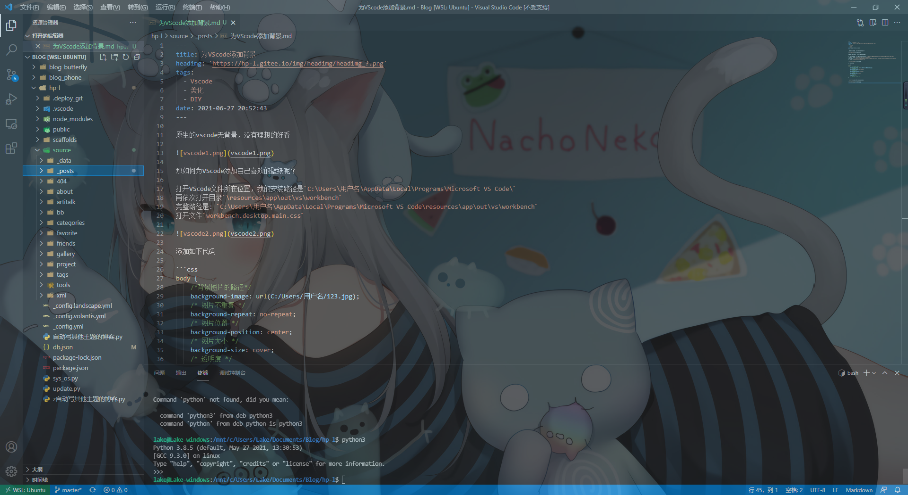

为VScode添加背景
三白
6月 27, 2021
![]()
原生的vscode无背景，没有理想的好看

那如何为VScode添加自己喜欢的壁纸呢？
打开VScode文件所在位置，我的安装路径是C:\Users\用户名\AppData\Local\Programs\Microsoft VS Code\
再依次打开目录\resources\app\out\vs\workbench
完整路径是: C:\Users\用户名\AppData\Local\Programs\Microsoft VS Code\resources\app\out\vs\workbench
打开文件workbench.desktop.main.css

添加如下代码
body {
/*背景图片的路径*/
background-image: url(C:/Users/用户名/123.jpg);
/* 图片不重复 */
background-repeat: no-repeat;
/* 图片位置 */
background-position: center;
/* 图片大小 */
background-size: cover;
/* 透明度 */
opacity: 0.7;
/* opacity: 0.75; */
}

Ctrl + S保存，重启VScode即可，效果如下。

可能会提示Code可能损坏，这个可以忽略，选择不再提示就可以了。